<!DOCTYPE html>
<html lang="en">
  <head>
    <meta charset="utf-8" />
    <meta name="viewport" content="width=device-width, initial-scale=1.0, maximum-scale=1.0, user-scalable=no" />

    <title></title>
    <link rel="stylesheet" href="dist/reveal.css" />
    <link rel="stylesheet" href="dist/theme/night.css" id="theme" />
    <link rel="stylesheet" href="plugin/highlight/zenburn.css" />
	<link rel="stylesheet" href="css/layout.css" />
	<link rel="stylesheet" href="plugin/customcontrols/style.css">


    <script defer src="dist/fontawesome/all.min.js"></script>

	<script type="text/javascript">
		var forgetPop = true;
		function onPopState(event) {
			if(forgetPop){
				forgetPop = false;
			} else {
				parent.postMessage(event.target.location.href, "app://obsidian.md");
			}
        }
		window.onpopstate = onPopState;
		window.onmessage = event => {
			if(event.data == "reload"){
				window.document.location.reload();
			}
			forgetPop = true;
		}

		function fitElements(){
			const itemsToFit = document.getElementsByClassName('fitText');
			for (const item in itemsToFit) {
				if (Object.hasOwnProperty.call(itemsToFit, item)) {
					var element = itemsToFit[item];
					fitElement(element,1, 1000);
					element.classList.remove('fitText');
				}
			}
		}

		function fitElement(element, start, end){

			let size = (end + start) / 2;
			element.style.fontSize = `${size}px`;

			if(Math.abs(start - end) < 1){
				while(element.scrollHeight > element.offsetHeight){
					size--;
					element.style.fontSize = `${size}px`;
				}
				return;
			}

			if(element.scrollHeight > element.offsetHeight){
				fitElement(element, start, size);
			} else {
				fitElement(element, size, end);
			}		
		}


		document.onreadystatechange = () => {
			fitElements();
			if (document.readyState === 'complete') {
				if (window.location.href.indexOf("?export") != -1){
					parent.postMessage(event.target.location.href, "app://obsidian.md");
				}
				if (window.location.href.indexOf("print-pdf") != -1){
					let stateCheck = setInterval(() => {
						clearInterval(stateCheck);
						window.print();
					}, 250);
				}
			}
	};


        </script>
  </head>
  <body>
    <div class="reveal">
      <div class="slides"><section  data-markdown><script type="text/template"><!-- .slide: class="drop" -->
<div class="" style="position: absolute; left: 0px; top: 0px; height: 700px; width: 960px; min-height: 700px; display: flex; flex-direction: column; align-items: center; justify-content: center" absolute="true">

## Reflection on where we're going

<split even>

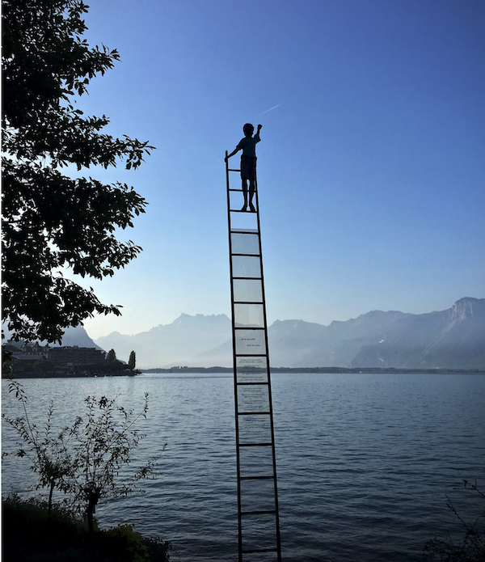


</split>

ladder- Armand Khoury, [unsplash](https://unsplash.com/photos/Ba6IlmAzl-k), mycelium Taviphoto/Shutterstock
</div>

<aside class="notes"><p>history isn&#39;t a ladder, it&#39;s a friggin&#39; tumbleweed, a rhizomatic forest, a burning bush.</p>
<ul>
<li>the point of as we may think article is that he draws together several contemporary technologies, giving something of their background, which he fuses imaginatively into a potential future</li>
<li>that people then sought to create something that went a great distance to make that future probably speaks to his positioning in the several industrial, military, social, and political networks where he was embeded</li>
<li>that is, someone else with a similar vision might not have gotten any traction or retroactive recognition at all</li>
<li>in the west, we&#39;re always concerned with the &#39;first&#39;, the first to do something, discover something, when time and again it&#39;s demonstrated that given a certain kind of configuration of power and connections, similar ideas emerge at similar times (perhaps the &#39;first&#39; tendency is deep in our psyche going all the way back to the doctrine of discovery?)</li>
<li>regardless, moving forward, I&#39;m going to tease out different strands that eventually weave together to create the technologies &amp; social conditions for this thing, the &#39;internet&#39;.</li>
</ul>
</aside></script></section><section  data-markdown><script type="text/template"><!-- .slide: class="drop" -->
<div class="" style="position: absolute; left: 0px; top: 0px; height: 700px; width: 960px; min-height: 700px; display: flex; flex-direction: column; align-items: center; justify-content: center" absolute="true">

### First Assessment

I will put together a demo memex with what I'm after, where the quality of work is sufficient for a 'satisfactory'.
<small>

- at least:
	- five **sources** adequately translated into note form
	-   notes with the bibliographic info, general summary
	-   atomic notes as appropriate <- important observations from your sources
	-   interlinkages 
	-   a map of content note providing some initial structure, an initial 'way in' to your memex
</small>
</div>

<aside class="notes"><ul>
<li>you could have a note on bush, on caulfield, on walkowitze, on dooley</li>
<li>you can make notes on other kinds of resources too, including documentaries, although there you&#39;d have to keep track of time stamps, and your notes would have to involve double checking or verifying statements made in the documentary, or trying to find materials that support/contest those statements</li>
</ul>
</aside></script></section><section  data-markdown><script type="text/template"><!-- .slide: class="drop" data-background-opacity="0.5" data-background-image="chinese-silk-loom.png" -->
<div class="" style="position: absolute; left: 0px; top: 0px; height: 700px; width: 960px; min-height: 700px; display: flex; flex-direction: column; align-items: center; justify-content: center" absolute="true">

<br><br><br><Br><Br><Br><br><br>
### Jacquard's the Name, Weaving's the Game

<small>Iowa State University, “A silk loom,” _Omeka@CTL_, accessed January 29, 2023, http://libraryexhibits.uvm.edu/omeka/items/show/1018.</small>
</div>

<aside class="notes"><p>I am leaving hooks throughout for people to ask &#39;what&#39;s left out?&#39; or &#39;what else do i need to know&#39;? You would then use that to form your search for secondary literature from which you&#39;d derive useful notes.</p>
<p>the goal of today is to pull one of the threads that leads to modern digital computing, that emerges from one of the world&#39;s oldest technologies</p>
</aside></script></section><section  data-markdown><script type="text/template"><!-- .slide: class="drop" -->
<div class="" style="position: absolute; left: 0px; top: 0px; height: 700px; width: 960px; min-height: 700px; display: flex; flex-direction: column; align-items: center; justify-content: center" absolute="true">

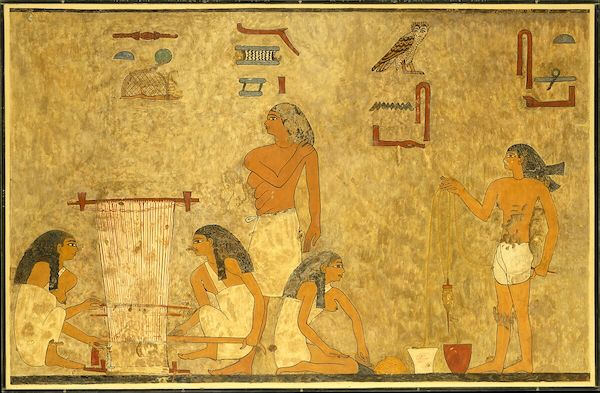


Middle Kingdom, ca 1897-1878 BCE. MET.
</div>

<aside class="notes"><p>weaving is one of the earliest technologies. evidence going back to at least 5th millenium BCE. Simple frame with weights to hold the threads down and secure so that another thread can be pulled under and over the first threads, perpendicular.</p>
</aside></script></section><section  data-markdown><script type="text/template"><!-- .slide: class="drop" -->
<div class="" style="position: absolute; left: 0px; top: 0px; height: 700px; width: 960px; min-height: 700px; display: flex; flex-direction: column; align-items: center; justify-content: center" absolute="true">

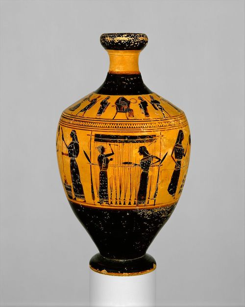


Amasis Painter, ca 550-530 BCE. MET
</div></script></section><section  data-markdown><script type="text/template"><!-- .slide: class="drop" -->
<div class="" style="position: absolute; left: 0px; top: 0px; height: 700px; width: 960px; min-height: 700px; display: flex; flex-direction: column; align-items: center; justify-content: center" absolute="true">

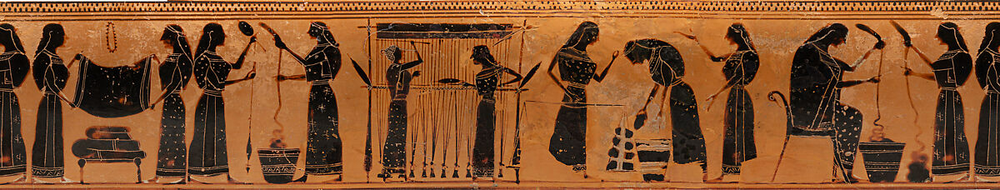


Amasis Painter, ca 550-530 BCE. MET
</div>

<aside class="notes"><p>notice this is a social practice. there is reason to believe that some of the structural features of some of the ancient poems/songs that come down to us in a variety of traditions might have something to do with remembering the patterns of strings to lift/lower to achieve particular patterns. But this is an area I do not know much about and am hesitant to say more.</p>
</aside></script></section><section  data-markdown><script type="text/template"><!-- .slide: class="drop" data-background-opacity="1" data-background-image="flax.png" -->
<div class="" style="position: absolute; left: 0px; top: 0px; height: 700px; width: 960px; min-height: 700px; display: flex; flex-direction: column; align-items: center; justify-content: center" absolute="true">

<small><br><br><Br><br><br><br><Br><br><Br><br><Br><Br>

(btw [here's a nice little step-by-step from growing flax to making linen](https://ulsterlinen.com/flax-to-linen/) ) </small>
</div>

<aside class="notes"><p>flax is known to be used as a source for textiles as early as 4500 BCE (ie, middle of 5th millenium).</p>
<p>of course, the other major fiber used for making textiles is wool.</p>
</aside></script></section><section  data-markdown><script type="text/template"><!-- .slide: class="drop" -->
<div class="" style="position: absolute; left: 0px; top: 0px; height: 700px; width: 960px; min-height: 700px; display: flex; flex-direction: column; align-items: center; justify-content: center" absolute="true">

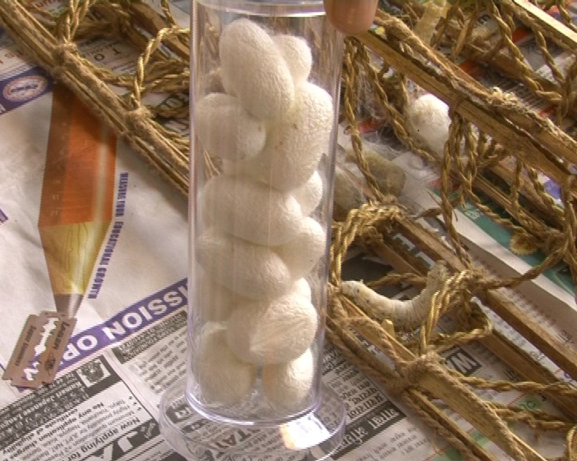


[wikimedia commons](https://en.wikipedia.org/wiki/Bombyx_mori#/media/File:Cocoon.jpg)
</div>

<aside class="notes"><p>archaeology suggests silk was being made in northern china between 3500-2700 years ago; a legend suggests empress Si Ling Chi, ca 2700, sees some cocoons on mulberry leaves and is curious about them; drops by accident in her tea. Trying to fish it out she discovers the heat has loosend the cocoon into its threads.</p>
</aside></script></section><section  data-markdown><script type="text/template"><!-- .slide: class="drop" -->
<div class="" style="position: absolute; left: 0px; top: 0px; height: 700px; width: 960px; min-height: 700px; display: flex; flex-direction: column; align-items: center; justify-content: center" absolute="true">

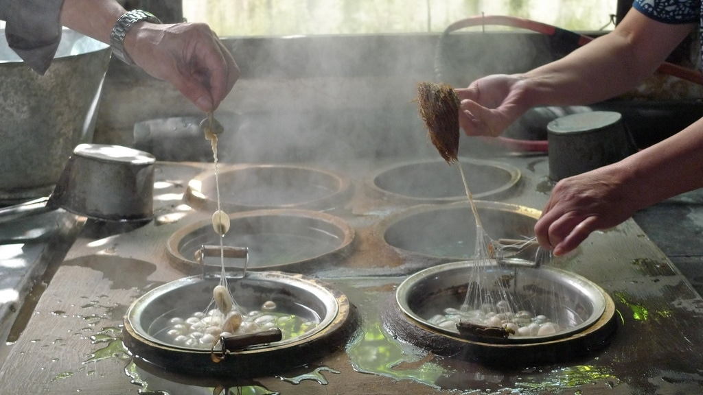


A [video with captions detailing the traditional process, Wuzhen](https://vimeo.com/7229973?embedded=true&source=vimeo_logo&owner=459720)
</div>

<aside class="notes"><p>Apparently, takes around 6k pods to make 1 kg of silk.
Evidence that silk was being made in India by the 3rd millenium BC. That&#39;s a big swathe of the world, and the work and effort required to make silks made them luxury items from the get-go. Silks from India, China highly desireable commodities in the rest of Eurasia; calling the main trade route &#39;the silk road&#39; (a linking up of a variety of local trade networks into one larger network from China to Europe) gives a sense of how important this is; not just trade, but religion, disease, whathaveyou moves along this route</p>
<p>The drawloom is invented around the 2nd century BCE and this increases the quantity and quality and decorative possibilities of silk</p>
</aside></script></section><section  data-markdown><script type="text/template"><!-- .slide: class="drop" -->
<div class="" style="position: absolute; left: 0px; top: 0px; height: 700px; width: 960px; min-height: 700px; display: flex; flex-direction: column; align-items: center; justify-content: center" absolute="true">


Justinian 1
</div>

<aside class="notes"><p>procopius,  in the 6th century chronicling the age, tells of some industrial espionage conducted at Justinian 1&#39;s request. Raw silk had been traded before, but the secret of where the silk came from unknown in the west. Byzantium was a centre for processing silk from the 4th century on, and was an important source of revenue. Justinian learns of 2 monks who&#39;ve been to china and have seen the cocoons; J sends them back to steal em. Put the pods in hollow canes, keep em cold and dormant, gets em to Byz puts them in the sun &amp; dungheap and feed em mulberry when they emerge.</p>
</aside></script></section><section  data-markdown><script type="text/template"><!-- .slide: class="drop" -->
<div class="" style="position: absolute; left: 0px; top: 0px; height: 700px; width: 960px; min-height: 700px; display: flex; flex-direction: column; align-items: center; justify-content: center" absolute="true">

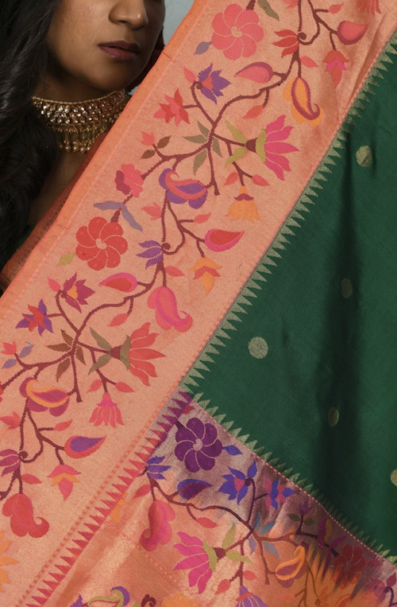


Apparently a hand-woven (presumably simple loom?) silk sold on Etsy by [BholiByVartika](https://www.etsy.com/ca/shop/BholiByVartika?ref=simple-shop-header-name&listing_id=1165286847)
</div>

<aside class="notes"><p>thing with silk is that the threads are so fine that if they can be carefully drawn together you can&#39;t see the individual threads; only a few inches of fabric can be made per day; makes for beautiful fabric; to own such things, to control such things is the source of money and a sign/source of power.</p>
</aside></script></section><section  data-markdown><script type="text/template"><!-- .slide: class="drop" -->
<div class="" style="position: absolute; left: 0px; top: 0px; height: 700px; width: 960px; min-height: 700px; display: flex; flex-direction: column; align-items: center; justify-content: center" absolute="true">

Some Weaving terms
- warp - the vertical threads, held in tension
- weft - the horizontal threads
- shed - the space created when some warp threads are lifted up
- shuttle - a wooden block used to pull the weft threads through the shed
- comb - pushes the threads tight together once the shuttle has passed through
- drawloom - enables individual warp threads to be drawn up
</div></script></section><section  data-markdown><script type="text/template"><!-- .slide: class="drop" -->
<div class="" style="position: absolute; left: 0px; top: 0px; height: 700px; width: 960px; min-height: 700px; display: flex; flex-direction: column; align-items: center; justify-content: center" absolute="true">

Implications of a drawloom?

- 2 person set up
- slow - care, feeding, value?
- how much land devoted to flax, to mulberries, to sheep, etc?
- reproducibility? 
- training?
- think in terms of assemblages, things coming together

*...this is the kind of thing you could sketch out in Obsidian canvas, btw...*
</div>

<aside class="notes"><p>a big issue is that every fabric is a one-off; the loom is not a machine, not really, in the sense of it does something over and over again, but rather a prosthesis to enhance manual abilities - like an abacus helps with counting and remembering, but doesn&#39;t do the counting itself</p>
</aside></script></section><section  data-markdown><script type="text/template"><!-- .slide: class="drop" data-background-opacity="0.5" data-background-image="lyon.png" -->
<div class="" style="position: absolute; left: 0px; top: 0px; height: 700px; width: 960px; min-height: 700px; display: flex; flex-direction: column; align-items: center; justify-content: center" absolute="true">

### The Silk Industry of Lyon
<br><br><br><br><br><br>
via [Nguyen Dang Hoang Nhu, unsplash.com](https://unsplash.com/photos/6tcJQYz--jU)
</div>

<aside class="notes"><p>Fast Forward to Lyons around the 15th Century</p>
<p>louis XI 1461-1483 - establishes silk in loire valley; wants silk, but as a luxury good, where you get silk markets, you get other wondrous things; paid bonuses to lure italian silk workers and others to come; a</p>
</aside></script></section><section  data-markdown><script type="text/template"><!-- .slide: class="drop" -->
<div class="" style="position: absolute; left: 0px; top: 0px; height: 700px; width: 960px; min-height: 700px; display: flex; flex-direction: column; align-items: center; justify-content: center" absolute="true">

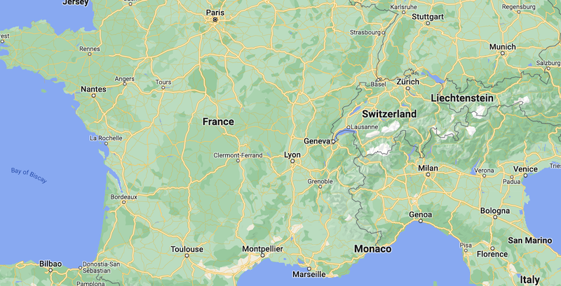
</div>

<aside class="notes"><p>lso happens to be geographically close to italy, mediterranean, controls access to the interior, a great crossroads for western european trade</p>
</aside></script></section><section  data-markdown><script type="text/template"><!-- .slide: class="drop" -->
<div class="" style="position: absolute; left: 0px; top: 0px; height: 700px; width: 960px; min-height: 700px; display: flex; flex-direction: column; align-items: center; justify-content: center" absolute="true">

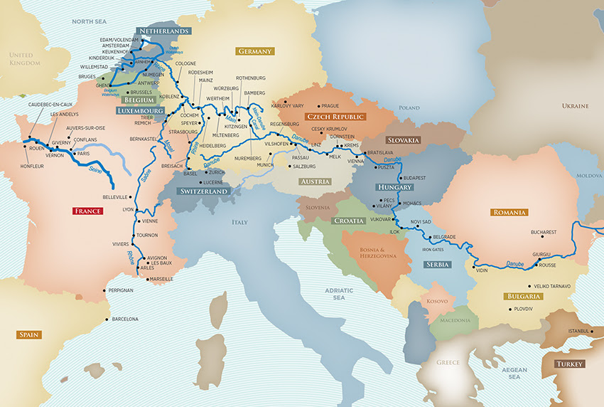
</div>

<aside class="notes"><p>subsequent french kinds spend a great deal of time and effort in Lyons, for campaigns in what is now italy; but presence of king means presence of court, courtiers, so lots of money to be made in silks... whoever can increase spead</p>
</aside></script></section><section  data-markdown><script type="text/template"><!-- .slide: class="drop" -->
<div class="" style="position: absolute; left: 0px; top: 0px; height: 700px; width: 960px; min-height: 700px; display: flex; flex-direction: column; align-items: center; justify-content: center" absolute="true">

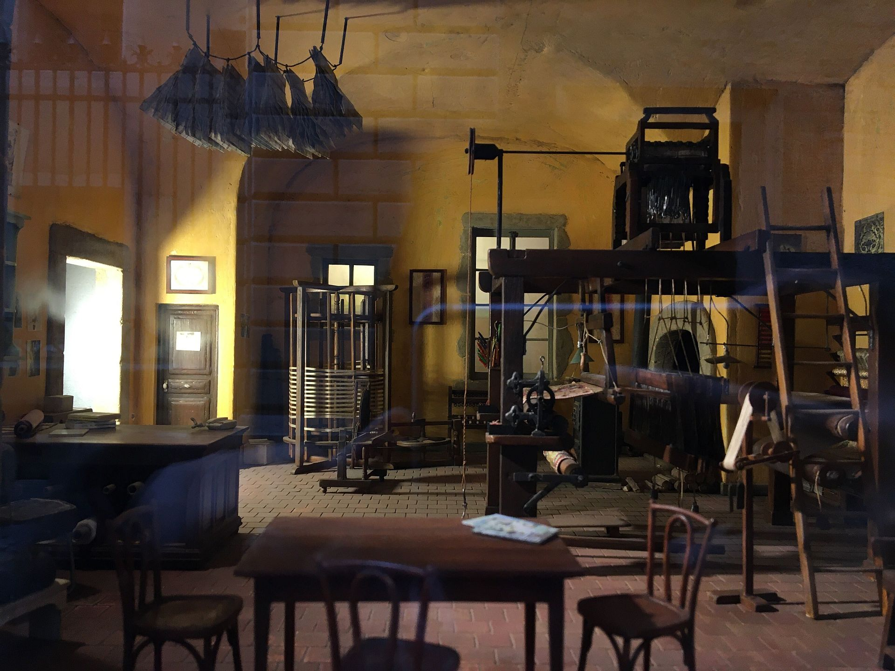
</div>

<aside class="notes"><p>over the years, new elements are added to the loom, levers to lift, but even still in the 18th c still a two man job</p>
<ul>
<li>best speed is around 2&quot; a day</li>
<li>&quot;the effect is a woven painting&quot;</li>
<li>by 19th century some 30 000 weavers employed (presumably an equal number of draw boys)</li>
<li>what was needed was a reliable way to lift the warp threads to make a shed for the shuttle to travel even faster</li>
</ul>
</aside></script></section><section  data-markdown><script type="text/template"><!-- .slide: class="drop" -->
<div class="" style="position: absolute; left: 0px; top: 0px; height: 700px; width: 960px; min-height: 700px; display: flex; flex-direction: column; align-items: center; justify-content: center" absolute="true">

Jacques de Vaucanson - 1709- 1782

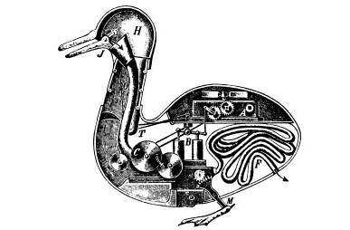
</div></script></section><section  data-markdown><script type="text/template"><!-- .slide: class="drop" -->
<div class="" style="position: absolute; left: 0px; top: 0px; height: 700px; width: 960px; min-height: 700px; display: flex; flex-direction: column; align-items: center; justify-content: center" absolute="true">

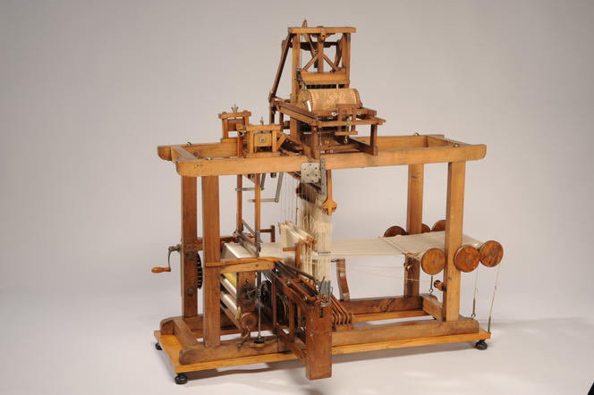


pic M. Favareille/Musee des Arts et Metiers

The barrel at top would've been metal. Similarities to music box are not coincidental.
</div>

<aside class="notes"><p>&quot;In 1738 he constructed an <a href="https://www.britannica.com/technology/automaton">automaton</a>, “The Flute Player,” followed the next year by “The Tambourine Player” and “The Duck.” The last was especially noteworthy, imitating various movements of a live <a href="https://www.britannica.com/animal/duck">duck</a> including the motions of drinking, eating, and defecating. For the duck’s digestive system, he invented the flexible rubber tube.&quot; - Britannica
18th century mania for &#39;automata&#39;, mechanical turk, is a feature of our story we&#39;re not exploring today but you ought to look into it.</p>
<p>this loom - some enter production, but it doesn&#39;t catch on. hard to make the cylinders, hard to change them</p>
<ul>
<li>had rods tied to hooks for every warp thread</li>
<li>teeth on a cylinder directly pulling the hooks</li>
<li>if the teeth meet a card, nothing happens</li>
<li>if they meet space, rods pass through into the teeth lifting the thread</li>
<li>the precise pattern could be changed for every row</li>
<li>which is great if you want a repeating pattern</li>
</ul>
</aside></script></section><section  data-markdown><script type="text/template"><!-- .slide: class="drop" -->
<div class="" style="position: absolute; left: 0px; top: 0px; height: 700px; width: 960px; min-height: 700px; display: flex; flex-direction: column; align-items: center; justify-content: center" absolute="true">

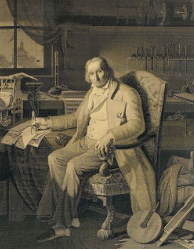


Joseph-Marie Jacquard, 1752-1834
</div>

<aside class="notes"><p>Babbage obtained this portrait in silk to display to his friends; took about 24k cards to make, produced after Jacquard died. We&#39;ll see in a bit why Babbage obtained this copy.</p>
<p>Life brackets the french revolution</p>
<p>think of the impacts in a city like Lyons, dependent on artisocratic economy</p>
<p>one major cultural impact of the revolution, the cult of rationality. and what is more rational than a machine?</p>
<p>j a counterrevolutionary; lives through siege &amp; fall of Lyons in 1793; escapes execution, he and son join revolutionary army under assumed names; son is killed in battle; J returns to lyons by 1798</p>
</aside></script></section><section  data-markdown><script type="text/template"><!-- .slide: class="drop" -->
<div class="" style="position: absolute; left: 0px; top: 0px; height: 700px; width: 960px; min-height: 700px; display: flex; flex-direction: column; align-items: center; justify-content: center" absolute="true">

Napoleon


</div>

<aside class="notes"><p>napoleon as first consul, Ingres, 1804</p>
<p>Brings revolution to an end in 1799 by assuming control of france with the consulate</p>
<p>Napoleon puts enormous energy into promoting science, technology</p>
<p>silk the largest export industry, therefore improvements could be rewarded w/ money, might push france ahead of its enemies</p>
<p>At some point between 1798 &amp; 1801 J manages to raise money (having burned through his inheritence) from tight social networks of weavers to experiment with improving the loom</p>
</aside></script></section><section  data-markdown><script type="text/template"><!-- .slide: class="drop" -->
<div class="" style="position: absolute; left: 0px; top: 0px; height: 700px; width: 960px; min-height: 700px; display: flex; flex-direction: column; align-items: center; justify-content: center" absolute="true">

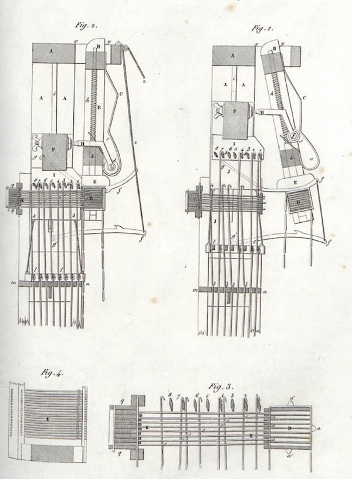
</div>

<aside class="notes"><p>J&#39;s first loom - 1801</p>
<ul>
<li>gets a patent to use treadles under foot to lift warp threads in consistent way to put geometric patterns into silk</li>
<li>exhibits it an napoleon&#39;s 2nd industry expo - we&#39;ll see the importance of &#39;industry expos&#39; again in this class</li>
<li>wins medal; enters a competition to improve fish net making, devises a loom just for that, win&#39;s prize there too, so now has money to really focus on making things</li>
</ul>
<p>J&#39;s second loom - 1804</p>
<ul>
<li>&shy;<!-- .element: class="fragment" data-fragment-index="1" -->second loom uses punch cards to control lifting of warp threads &amp; thus control every row - but the cards could be fed into the machine continuously. Not a cylinder, but a square drum, cards on each side of the drum, new cards enter the control as you go.</li>
</ul>
<p>Also year Napoleon crowns <em>himself</em> emperor</p>
</aside></script></section><section  data-markdown><script type="text/template"><!-- .slide: class="drop" -->
<div class="" style="position: absolute; left: 0px; top: 0px; height: 700px; width: 960px; min-height: 700px; display: flex; flex-direction: column; align-items: center; justify-content: center" absolute="true">

<iframe width="560" height="315" src="https://www.youtube.com/embed/OlJns3fPItE" title="YouTube video player" frameborder="0" allow="accelerometer; autoplay; clipboard-write; encrypted-media; gyroscope; picture-in-picture; web-share" allowfullscreen></iframe>

no audio on this; captions in the video.
</div>

<aside class="notes"><p>But how do you make the damned cards?</p>
<p>What&#39;s the history of the card making?</p>
</aside></script></section><section  data-markdown><script type="text/template"><!-- .slide: class="drop" -->
<div class="" style="position: absolute; left: 0px; top: 0px; height: 700px; width: 960px; min-height: 700px; display: flex; flex-direction: column; align-items: center; justify-content: center" absolute="true">

<div align="left">

Did Jacquard invent the punch card?

- &shy;<!-- .element: class="fragment" data-fragment-index="1" -->no - Louis Faucon/Falcon in 1728, but in his arrangment, the draw boy had to hold the card in place manually; Faucon improving an idea by his master Basile Bouchon uisng a paper tape with holes in it.

Did Jacquard invent automatic lifting of threads?

- &shy;<!-- .element: class="fragment" data-fragment-index="2" -->no - Vaucanson's metal cylinders could do that

</div>
</div>

<aside class="notes"><ul>
<li>the draw loom wasn&#39;t really a &#39;machine&#39; in the sense we&#39;re talking, just an extension of manual skill</li>
<li>Faucon&#39;s loom was still just an extension of the draw loom, though it could speed up the process a bit and enabled a bit of replication, one card at a time manually pressed against the hooks that&#39;d lift the threads</li>
<li>Vaucanson&#39;s loom</li>
</ul>
</aside></script></section><section  data-markdown><script type="text/template"><!-- .slide: class="drop" -->
<div class="" style="position: absolute; left: 0px; top: 0px; height: 700px; width: 960px; min-height: 700px; display: flex; flex-direction: column; align-items: center; justify-content: center" absolute="true">

<div align="left">

What *did* Jacquard invent?

- &shy;<!-- .element: class="fragment" data-fragment-index="1" -->An approach that applied threaded together punch cards to the automatic control of the loom.
	- 24 x speed increase! (ie 2 feet per day)
	- replicable patterns, complex patterns, multiple machines producing identical swathes of silk

</div>
</div>

<aside class="notes"><ul>
<li>we say that J invented the programmable loom, but it was more a confluence of events, an assemblage. <em>someone else might eventually have done it too, at roughly the same period</em>. The pieces after all were already around (I wonder if our desire to ascribe a &#39;first&#39; to everything is a descendent of the &#39;doctrine of discovery&#39;) - social/political/technological life is a complex system, of interconnected parts with feedback loops and dynamic change and emergent phenomena. At the same time, it does require a person to <strong>make something</strong> of the connections/positioning in the system...</li>
</ul>
</aside></script></section><section ><section data-markdown><script type="text/template"><!-- .slide: class="drop" -->
<div class="" style="position: absolute; left: 0px; top: 0px; height: 700px; width: 960px; min-height: 700px; display: flex; flex-direction: column; align-items: center; justify-content: center" absolute="true">

**What really matters about Jacquard's invention are the *cards*, not the loom.**
</div>

<aside class="notes"><ul>
<li>the design to be printed was separted from the medium in which it would be realized</li>
<li>the control of the device was also separated from the device to another medium</li>
</ul>
</aside></script></section><section data-markdown><script type="text/template"><!-- .slide: class="drop" -->
<div class="" style="position: absolute; left: 0px; top: 0px; height: 700px; width: 960px; min-height: 700px; display: flex; flex-direction: column; align-items: center; justify-content: center" absolute="true">

Let's look at something made on a Jacquard Loom

[mid 19th century shawl, MET](https://www.metmuseum.org/art/collection/search/157013)
</div>

<aside class="notes"><ul>
<li>napoleon into silks, would only wear silk from Lyon</li>
<li>declares J loom public property, gives J income &amp; royalities for life equivalent in buying power to millions of dollards</li>
<li>french tried to keep j looms from spreading outside france, but the british soon had them too (eventually hooking &#39;em up to steam, but that&#39;s a story for another day)</li>
<li>Jacquard becomes &#39;jacquard&#39;, a term of art to imply weaving done a particular way; computerized jacquard machines exist, airbags are made with them because the weaving has to be so tight</li>
<li>traditional jacquard looms still in use in Lyons, Queen Elizabeth&#39;s train for her wedding was made on one; suppppper expensive and prestigious</li>
<li>story that draw boys of Lyons threw jacquard into the river, mad at being put out of work</li>
</ul>
</aside></script></section></section><section  data-markdown><script type="text/template"><!-- .slide: class="drop" -->
<div class="" style="position: absolute; left: 0px; top: 0px; height: 700px; width: 960px; min-height: 700px; display: flex; flex-direction: column; align-items: center; justify-content: center" absolute="true">

A brief tour of some jacquard-inspired devices
</div></script></section><section  data-markdown><script type="text/template"><!-- .slide: class="drop" -->
<div class="" style="position: absolute; left: 0px; top: 0px; height: 700px; width: 960px; min-height: 700px; display: flex; flex-direction: column; align-items: center; justify-content: center" absolute="true">

Charles Babbage.

Difference Engine / Analytical Engine

<iframe width="560" height="315" src="https://www.youtube.com/embed/be1EM3gQkAY" title="YouTube video player" frameborder="0" allow="accelerometer; autoplay; clipboard-write; encrypted-media; gyroscope; picture-in-picture; web-share" allowfullscreen></iframe>

- 'difference' because it uses the method of differences to calculate tables by adding the differences between items in a series. But had to be set up manually: no cards
</div>

<aside class="notes"><p>b inspired by automata
adam smith pin factory
Gaspard de Prony who devises a way of breaking apart all the steps in computation of logs so that teams of fairly unskilled workers can do it (tables of logarithms help people with engineering, life insurance, surveying, lots of things: but has to be <strong>correct</strong>)
babbage conceives of the idea of using cogwheels to perform simple math, in series of steps; the cards would allow pins to drop to engage some cogwheels and not others
conceives of idea of using punch cards as way of putting information into his machine and out of his machine, to do such calculations automatically</p>
</aside></script></section><section  data-markdown><script type="text/template"><!-- .slide: class="drop" -->
<div class="" style="position: absolute; left: 0px; top: 0px; height: 700px; width: 960px; min-height: 700px; display: flex; flex-direction: column; align-items: center; justify-content: center" absolute="true">

<div align="left">

"**_We may say most aptly that the Analytical Engine weaves algebraic patterns just as the Jacquard loom weaves flowers and leaves…_**" - Ada Lovelace  

- depends upon cards to enter data, output data, store instructions

We'll talk more about Babbage - and more importantly, Ada Lovelace - later. 

</div>
</div>

<aside class="notes"><p>While B could imagine the device and how it would do basic operations, Lovelace figured out how to <em>program</em> it to do just about anything; this too is a pattern we&#39;ll see again and again - people design and build things with no idea how to make the things actually <em>achieve</em> results, and frequently the people who figure out the programming were women.</p>
<p>btw google just released a LLM for music, finally realizing Ada Lovelace&#39;s prediction</p>
</aside></script></section><section  data-markdown><script type="text/template"><!-- .slide: class="drop" -->
<div class="" style="position: absolute; left: 0px; top: 0px; height: 700px; width: 960px; min-height: 700px; display: flex; flex-direction: column; align-items: center; justify-content: center" absolute="true">

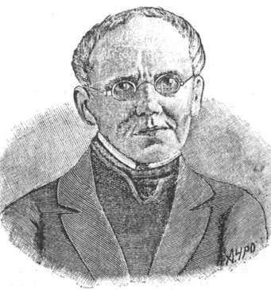

*wikimedia commons*

**S Korsakov (1797 – 1853)**
- publishes a method for searching information stored on punched cards
- (Worked for the Russian Police Ministry; the work didn't really penetrate the Anglosphere)
</div>

<aside class="notes"><p>&#39;Simon&#39;</p>
</aside></script></section><section  data-markdown><script type="text/template"><!-- .slide: class="drop" -->
<div class="" style="position: absolute; left: 0px; top: 0px; height: 700px; width: 960px; min-height: 700px; display: flex; flex-direction: column; align-items: center; justify-content: center" absolute="true">

**Herman Hollerith (1860 - 1929)**
<split even>

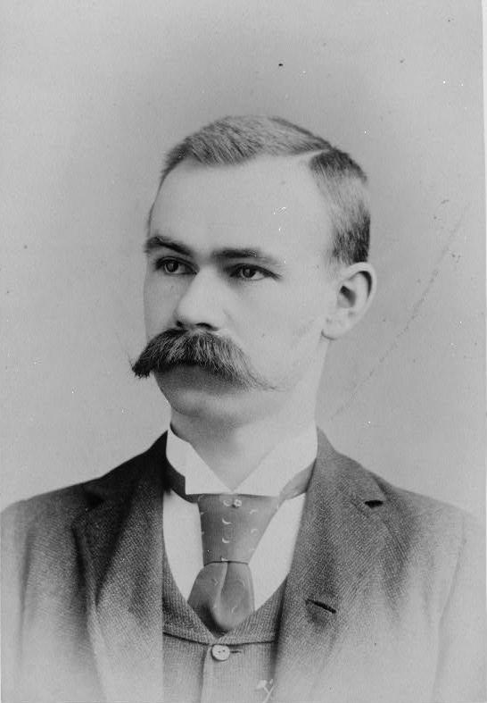

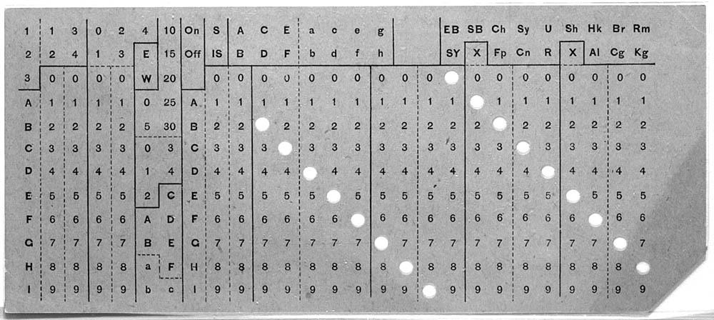

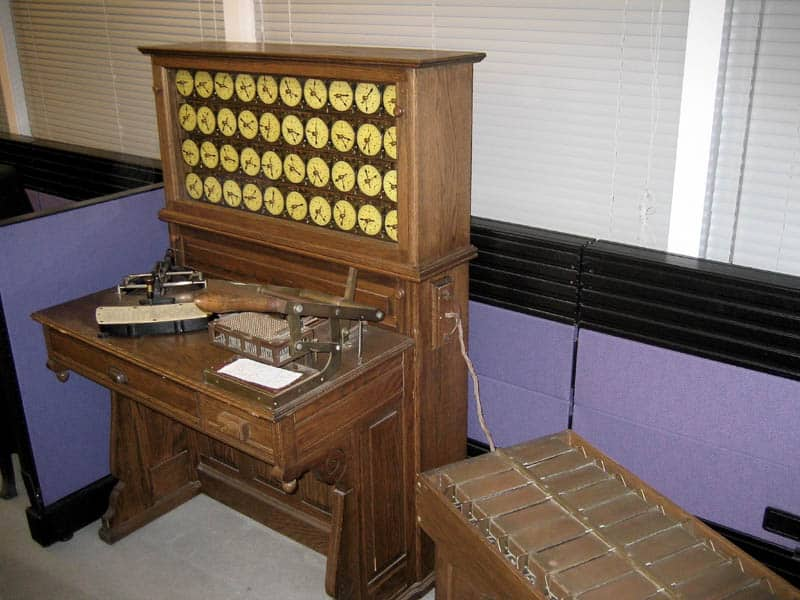

</split>

*Wikimedia Commons, Adam Schuster*
</div>

<aside class="notes"><ul>
<li>worked for US census in 1880; took 7 years for everything to get counted up, next census in 1890, fear that they wouldn&#39;t finish before the next one</li>
<li>his brother in law worked in silk industry</li>
<li>realized that he could combine a punch card with an electric circuit; a needle could drop through a hole into a litle disc of mercury, completing a circuit to move a counter 1 notch</li>
<li>creates the Tabulating Machine Company</li>
<li>1890 census of 62 million people took only 2 years to process.</li>
</ul>
</aside></script></section><section  data-markdown><script type="text/template"><!-- .slide: class="drop" -->
<div class="" style="position: absolute; left: 0px; top: 0px; height: 700px; width: 960px; min-height: 700px; display: flex; flex-direction: column; align-items: center; justify-content: center" absolute="true">

Coupling punch cards with electro-mechanical counting sets in train the development of the *digital* computer... which we'll turn to, eventually.
</div></script></section><section  data-markdown><script type="text/template"><!-- .slide: class="drop" -->
<div class="" style="position: absolute; left: 0px; top: 0px; height: 700px; width: 960px; min-height: 700px; display: flex; flex-direction: column; align-items: center; justify-content: center" absolute="true">

<div align="left">

What are the *threads* that had to come together?

What are the *assemblages* that enabled these developments?

Who is being *left out* of the story?

What other *questions* does this story raise?

Identifying *keywords* or *key-phrases* that encapsulate those questions for you will help you surface critical readings (or indeed, primary materials)

</div>
</div></script></section><section  data-markdown><script type="text/template"><!-- .slide: class="drop" -->
<div class="" style="position: absolute; left: 0px; top: 0px; height: 700px; width: 960px; min-height: 700px; display: flex; flex-direction: column; align-items: center; justify-content: center" absolute="true">

**...a bit of fun:**

[Make your own punch card](http://knitting.bikibird.com/jacquardform.html)

For added challenge, use Baon's Bi-literal cipher from last week. 

Can you encode your name into the punch card?

Also, [useful resource here](https://www.computerhistory.org/storageengine/punched-cards-control-jacquard-loom/)
</div></script></section><section  data-markdown><script type="text/template"></script></section></div>
    </div>

    <script src="dist/reveal.js"></script>

    <script src="plugin/markdown/markdown.js"></script>
    <script src="plugin/highlight/highlight.js"></script>
    <script src="plugin/zoom/zoom.js"></script>
    <script src="plugin/notes/notes.js"></script>
    <script src="plugin/math/math.js"></script>
	<script src="plugin/mermaid/mermaid.js"></script>
	<script src="plugin/chart/chart.min.js"></script>
	<script src="plugin/chart/plugin.js"></script>
	<script src="plugin/customcontrols/plugin.js"></script>

    <script>
      function extend() {
        var target = {};
        for (var i = 0; i < arguments.length; i++) {
          var source = arguments[i];
          for (var key in source) {
            if (source.hasOwnProperty(key)) {
              target[key] = source[key];
            }
          }
        }
        return target;
      }

	  function isLight(color) {
		let hex = color.replace('#', '');

		// convert #fff => #ffffff
		if(hex.length == 3){
			hex = `${hex[0]}${hex[0]}${hex[1]}${hex[1]}${hex[2]}${hex[2]}`;
		}

		const c_r = parseInt(hex.substr(0, 2), 16);
		const c_g = parseInt(hex.substr(2, 2), 16);
		const c_b = parseInt(hex.substr(4, 2), 16);
		const brightness = ((c_r * 299) + (c_g * 587) + (c_b * 114)) / 1000;
		return brightness > 155;
	}

	var bgColor = getComputedStyle(document.documentElement).getPropertyValue('--r-background-color').trim();
	var isLight = isLight(bgColor);

	if(isLight){
		document.body.classList.add('has-light-background');
	} else {
		document.body.classList.add('has-dark-background');
	}

      // default options to init reveal.js
      var defaultOptions = {
        controls: true,
        progress: true,
        history: true,
        center: true,
        transition: 'default', // none/fade/slide/convex/concave/zoom
        plugins: [
          RevealMarkdown,
          RevealHighlight,
          RevealZoom,
          RevealNotes,
          RevealMath.MathJax3,
		  RevealMermaid,
		  RevealChart,
		  RevealCustomControls,
        ],


    	allottedTime: 120 * 1000,

		mathjax3: {
			mathjax: 'plugin/math/mathjax/tex-mml-chtml.js',
		},
		markdown: {
		  gfm: true,
		  mangle: true,
		  pedantic: false,
		  smartLists: false,
		  smartypants: false,
		},

		mermaid: {
			theme: isLight ? 'default' : 'dark',
		},

		customcontrols: {
			controls: [
			]
		},
      };

      // options from URL query string
      var queryOptions = Reveal().getQueryHash() || {};

      var options = extend(defaultOptions, {"width":960,"height":700,"margin":0.04,"controls":true,"progress":true,"slideNumber":false,"transition":"fade","transitionSpeed":"default"}, queryOptions);
    </script>

    <script>
      Reveal.initialize(options);
    </script>
  </body>

  <!-- created with Advanced Slides -->
</html>
